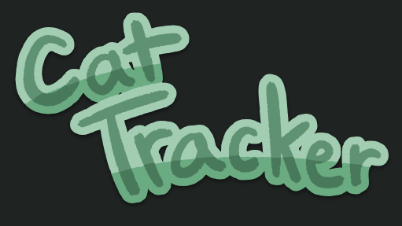

Final Presentation Video
Our video presentation gives a general overview of what the CatTracker's main functionalities, our development process, and a short demonstration.

Our video presentation gives a general overview of what the CatTracker's main functionalities, our development process, and a short demonstration.